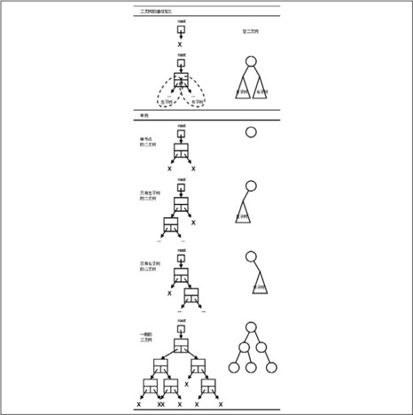

在第12章讲过数据结构是数据的组织方式，包含存储方式和访问方式两层意思。用指针组织的数据存储方式比数组更加灵活，相应的访问方式也会有新的特性。本章介绍链表、二叉树和哈希表三种数据结构，它们和数组㉓一样可以表示一组相同类型元素的集合，一样可以支持添加、删除、查找等访问操作，那么在实际应用中要表示一个集合到底该选用哪种数据结构呢？应该看哪种数据结构的存储方式和访问方式最符合你的应用需要。
25.1.1 单链表
图22.6所示的链表即单链表（Single Linked List），本节我们学习如何创建和操作这种链表。每个链表有一个头指针，通过头指针可以找到第一个节点，每个节点都可以通过指针域找到它的后继，最后一个节点的指针域为NULL，表示没有后继。数组在内存中是连续存放的，而链表在内存中的布局是不规则的，我们知道要访问某个数组元素可以通过“基地址+n×每个元素的字节数”得到它地址，或者说数组支持随机访问，而链表是不支持随机访问的，只能通过前一个节点的指针域得知后一个节点的地址，因此只能从头指针开始顺序访问各节点。以下代码实现了单链表的基本操作。
例25.1 单链表
在初始化时把头指针head初始化为NULL，表示空链表。然后main函数调用make_node创建几个节点，分别调用insert插入到链表中。
如图25.1所示，insert函数虽然简单，其中也隐含了一种特殊情况（Special Case）的处理，当head为NULL时，执行insert操作插入第一个节点之后，head指向第一个节点，而第一个节点的next指针域成为NULL，这很合理，因为它也是最后一个节点。所以空链表虽然是一种特殊情况，却不需要特殊的代码来处理，和一般情况用同样的代码处理即可，这样写出来的代码更简洁，但是在读代码时要想到可能存在的特殊情况。
图25.1 链表的插入操作
当然，insert函数传进来的参数p也可能有特殊情况，传进来的p可能是NULL，甚至是野指针，本章的函数代码都假定调用者传进来的参数是合法的，不对参数做特别检查。事实上，对指针参数做检查是不现实的，如果传进来的是NULL还可以检查一下，如果传进来的是野指针，根本无法检查它指向的内存单元是不是合法的，C标准库函数通常也不对指针参数做检查，例如strcpy（p, NULL）就会引起段错误。
接下来main函数调用search在链表中查找某个节点，如果找到就返回指向该节点的指针，找不到就返回NULL。
search函数其实也隐含了对于空链表这种特殊情况的处理，如果是空链表则循环体一次都不执行，直接返回NULL。
然后main函数调用delete从链表中摘除用search找到的节点，再调用free_node释放该节点的存储空间。
图25.2 链表的删除操作
从图25.2可以看出，要摘除一个节点需要首先找到它的前趋然后才能做摘除操作，而在单链表中通过某个节点只能找到它的后继而不能找到它的前趋，所以删除操作要麻烦一些，需要从第一个节点开始依次查找要摘除的节点的前趋。delete操作也要处理一种特殊情况，如果要摘除的节点是链表的第一个节点，它是没有前趋的，这种情况要用特殊的代码处理，而不能和一般情况用同样的代码处理，因为p==head的情况处理代码是head=p->next;，而pre->next==p的情况处理代码是pre->next=p->next;，处理代码不一样，不能合并。如果想办法把处理代码变成一样的就可以合并了，结合图25.3看下面的解法：
图25.3 消除特殊情况的链表删除操作
定义一个指向指针的指针pnext，在for循环中pnext遍历head指针和每个节点的next指针域，这样无论是head指针还是每个节点的next指针域都可以用*pnext访问，就把处理代码统一起来了。
然后main函数调用traverse函数遍历整个链表，调用destroy函数销毁整个链表，请读者自己阅读这两个函数的代码。destroy函数依次释放链表中的每个节点，想一想能不能用traverse（free）代替destory函数？
如果限定每次只允许在链表头部插入和删除元素，就形成一个LIFO的访问序列，所以在链表头部插入和删除元素的操作实现了堆栈的Push和Pop操作，main函数的最后几步把链表当成堆栈来操作，从打印结果可以看到出栈顺序和入栈是相反的。
1．比较数组和链表各自的优缺点，想想应该从哪些方面做比较？
2．修改insert函数实现插入排序的功能，链表中的元素按从小到大排列，每次插入新的元素都要在链表中找到合适的位置再插入。在第11.6节讲过，如果数组元素是有序排列的，可以用折半查找算法更快地找到其中某个元素，想一想如果链表中的元素是有序排列的，是否适用折半查找算法？为什么？
3．基于单链表实现队列的enqueue和dequeue操作。在链表的末尾再维护一个指针tail，在tail处enqueue，在head处dequeue。想一想能不能反过来，在head处enqueue而在tail处dequeue？
4．实现函数void reverse(void);将单链表反转，如图25.4所示。要求尽可能把特殊情况转化成一般情况处理。
图25.4 单链表的反转
25.1.2 双向链表
链表的delete操作需要首先找到要摘除的节点的前趋，而在单链表中找某个节点的前趋需要从表头开始依次查找，对于n个节点的链表，删除操作的时间复杂度是O(n)。可以想象得到，如果每个节点再维护一个指向前趋的指针，删除操作就像插入操作一样容易了，时间复杂度是O(1)，这样的链表称为双向链表（Doubly Linked List）。要实现双向链表只需在上一节代码的基础上改动两个地方。
在linkedlist.h中修改链表节点的结构体定义：
在linkedlist.c中修改insert和delete函数：
图25.5 双向链表
注意图25.5中每个节点的prev指针应该指向前一个节点开头，但为了美观我都画成指向前一个节点末尾，现在对本章所画的图做以下约定：一个指针箭头可以指向一个结构体方框的任何位置，都表示指向这个结构体的首地址。
由于引入了prev指针，insert和delete函数中都有一些特殊情况需要用特殊代码处理，不能和一般情况用同样的代码处理，这非常不爽，如果在表头和表尾各添加一个Sentinel节点（这两个节点只用于界定表头和表尾，不保存元素），就可以把这些特殊情况都转化为一般情况了。
例25.2 带Sentinel的双向链表
图25.6 带Sentinel的双向链表
初始化空链表时两个Sentinel节点互相指向对方：
第一行是个Tentative Definition，第一行声明的变量名tailsentinel在第二行的Initializer中被引用，第二行声明的变量名headsentinel又在第三行的Initializer中被引用。
上面的例子还实现了队列的enqueue和dequeue操作，在head处enqueue而在tail处dequeue。现在结合第12.5节想一想，其实用链表实现环形队列是最自然的，以前基于数组实现环形队列，我们还要“假想”它是首尾相接的，而如果基于链表实现环形队列，根本不需要假想，它就是用指针串起来首尾相接的。把上面的程序改成环形链表（Circular Linked List）也非常简单，只需要把doublylinkedlist.c中的：
改成：
再把doublylinkedlist.c中所有的tail替换成head即可，相当于把head和tail合二为一了，如图25.7所示。
图25.7 环形链表
25.1.3 静态链表
现在回想一下在例12.4中使用的数据结构，我把图重新画在下面，如图25.8所示。
图25.8 广度优先搜索的队列数据结构
这是一个静态分配的数组，每个数组元素都有row、col和predecessor三个成员，predecessor成员保存一个数组下标，指向数组中的另一个元素，这其实也是链表的一种形式，称为静态链表，比如图25.8中的第6、4、2、1、0个元素串成一条链表。
25.1.4 本节综合练习
1．Josephus是公元1世纪的著名历史学家，相传在一次战役中他和另外几个人被围困在山洞里，他们宁死不屈，决定站成一圈，每次数到三个人就杀一个，直到全部死光为止。Josephus和他的一个朋友不想死，于是串通好了站在适当的位置上，最后只剩下他们俩的时候这个游戏就停止了。如果一开始的人数为N，每次数到M个人就杀一个，那么要想不死应该站在什么位置呢？这个问题比较复杂，参考文献[30]的1.3节专门研究了Josephus问题的解，有兴趣的读者可以参考。现在我们做个比较简单的练习，用链表模拟Josephus他们玩的这个游戏，N和M作为命令行参数传入，每个人的编号依次是1～N，打印每次被杀者的编号，打印最后一个幸存者的编号。
2．在第24.2.11节的习题1中规定了一种日志文件的格式，每行是一条记录，由行号、日期、时间三个字段组成，由于记录是按时间先后顺序写入的，可以看作所有记录按日期排序，对于日期相同的记录再按时间排序。现在要求从这样一个日志文件中读出所有记录组成一个链表，链表中的记录首先按时间排序，对于时间相同的记录再按日期排序，最后写回文件中。比如原文件的内容是：
重新排序输出的文件内容是：

25.2.1 二叉树的基本概念
链表的每个节点可以有一个后继，而二叉树（Binary Tree）的每个节点可以有两个后继。比如这样定义二叉树的节点：
这样的节点可以组织成如图25.9所示的各种形态。

图25.9 二叉树的定义和举例
二叉树可以这样递归地定义：
1．就像链表有头指针一样，每个二叉树有一个根指针（图25.9中的root指针）。根指针可以是NULL，表示空二叉树。
2．根指针可以指向一个节点，称为根节点，根节点除了保存元素之外还有两个指针域，这两个指针域又分别是另外两个二叉树（左子树和右子树）的根指针。
图25.9举例示意了几种情况。
⦁ 单节点的二叉树：左子树和右子树都是空二叉树。
⦁ 只有左子树的二叉树：右子树是空二叉树。
⦁ 只有右子树的二叉树：左子树是空二叉树。
⦁ 一般的二叉树：左右子树都不为空。注意图25.9中由圈和线段组成的简化图示，以后我们都采用这种简化图示法，在圈中标上该节点所保存的元素的值。
链表的遍历方法是显而易见的：从前到后遍历即可。而二叉树是一种树状结构，如何做到把所有节点都走一遍不重不漏呢？可以采用深度优先策略的遍历算法，比如前序遍历（Pre-order Traversal）、中序遍历（In-order Traversal）和后序遍历（Post-order Traversal）。也可以采用广度优先策略的遍历算法，比如层序遍历（Level-order Traversal）。我们结合图25.10的例子来理解。
图25.10 二叉树的遍历
前序遍历
1）访问根节点（图25.10标出了访问二叉树各节点的顺序，称为遍历序列）2）递归遍历左子树3）递归遍历右子树
中序遍历
1）递归遍历左子树2）访问根节点3）递归遍历右子树
后序遍历
1）递归遍历左子树2）递归遍历右子树3）访问根节点
层序遍历
根节点是第一层，根节点所指向的节点是第二层，第二层节点所指向的节点是第三层，一层一层遍历下去
在例12.3中每次走过一个点都要标记这个点已走过，而树状结构比迷宫的网状结构简单，在遍历过程中不需要标记已经走过的点，想一想为什么。前序和中序遍历序列合在一起可以唯一确定二叉树的形态，或者说根据遍历序列可以构造出二叉树，构造过程如图25.11所示。
图25.11 根据前序和中序遍历序列构造二叉树
1．前序遍历的第一个元素是4，它应该是根节点。
2．在中序遍历序列中，4左边的1、2、3应该是左子树的节点，4右边的5、6应该是右子树的节点。
3．左子树的前序遍历序列是213，中序遍历序列是123，右子树的前序遍历序列是56，中序遍历序列是56，可以根据本算法递归地构造左子树和右子树。
想一想，根据中序和后序遍历序列能否构造二叉树？根据前序和后序遍历序列能否构造二叉树？下面的例子实现了二叉树的基本操作。
例25.3 二叉树的基本操作
1．本节描述了二叉树的递归定义，想一想单链表的递归定义应该怎么表述？请仿照本节的例子用递归实现单链表的基本操作：
2．设二叉树的每个节点保存一个字符，中序遍历的结果是BGCAFHED，后序遍历的结果是GBFAEDHC，请画图表示这个二叉树。
25.2.2 排序二叉树
排序二叉树（Binary Search Tree，BST）具有这样的性质：根节点的元素大于左子树所有节点的元素，且小于右子树所有节点的元素，并且左子树和右子树也是排序二叉树。其实如图25.10所示的二叉树就是排序二叉树，可以看出排序二叉树的中序遍历序列是从小到大排列的。下面的例子实现了排序二叉树的基本操作。
例25.4 排序二叉树的基本操作

注意这个例子中insert和delete函数的参数是元素的值，而不是指向节点的指针，这和前面讲链表时实现的insert和delete函数不同，其实insert是一边查找一边做插入操作，delete也是一边查找一边做删除操作。可以看出，search、insert和delete操作的迭代次数都是和树的层数成正比，如果树中有n个节点，树的层数至少是O(lg(n))，所以这三个操作的时间复杂度在最好情况下是O(lg(n))，平均情况的时间复杂度分析起来比较复杂，我们略去分析直接给出结果，也是O(lg(n))。这其实和第11.4节的习题1介绍的快速排序算法的性质类似。
print_tree函数通过前序遍历打印树中的所有元素，为什么要打印成这种古怪的格式呢？因为这种格式可以用Greg Lee编写的The Tree Preprocessor（http://www.essex.ac.uk/linguistics/external/clmt/latex4ling/trees/tree/）转换成树形，非常形象：
1．请仿照本节的例子用递归实现有序单链表的基本操作：
2．本节例子中delete函数的实现虽然易懂，但效率不够高，请分析一下它做的哪些工作是重复的，然后想办法改进这个函数。
图25.12示意了一个简单的哈希表（Hash Table）。
要构造这样的哈希表，首先分配一个指针数组，数组中的每个元素是一个链表的头指针，哈希表由若干个链表组成，每个链表称为一个槽（Slot）。然后向哈希表中插入节点，哪个节点应该插入哪个槽中由哈希函数决定，在这个例子中我们简单地选取哈希函数h(x)=x%11，这样任意节点的元素x都可以映射成0～10之间的一个数，这个数就是槽的编号，把节点插入该槽的链表头部即可。要在哈希表中查找某个元素，首先根据元素的值计算槽编号，然后在槽中查找该元素并返回指向相应节点的指针。要在哈希表中删除某个元素，也是首先根据元素的值计算槽编号，然后在槽中找到该元素并删除它。
图25.12 哈希表
请读者自己编写程序构造这样一个哈希表，并实现search、insert和delete操作：
如果每个槽中至多只有一个元素，可以想象这种情况下search、insert和delete操作的时间复杂度都是O(1)，但有时会有多个元素被哈希函数映射到同一个槽中，这称为碰撞（Collision），设计一个好的哈希函数可以把元素比较均匀地分布到各个槽中，尽量避免碰撞。如果能把n个元素比较均匀地分布到m个槽中，每个糟中约有n/m个元素，则search、insert和delete操作的时间复杂度都是O(n/m)，如果n和m的比是常数，则时间复杂度仍然是O(1)。一般来说，要处理的元素越多，构造哈希表时分配的槽也应该越多，所以n和m成正比这个假设是成立的。
本节的哈希表，上一节的排序二叉树，以及上一节习题1的有向单链表，这三种数据结构都可以表示n个元素的集合，都支持search、insert和delete操作，现在我们比较一下这三种数据结构的search、insert和delete操作在平均情况下的时间复杂度，顺便拉上有序数组一起做比较，如表25.1所示。
表25.1 几种数据结构的search、insert和delete操作在平均情况下的时间复杂度比较

看起来哈希表在各方面都胜出一筹，其实这样的比较未必公平，哈希表也有很多限制：
⦁ 元素数n应该与槽数m成正比
⦁ 要找到合适的哈希函数，使元素可以均匀地分布到m个槽中
⦁ 哈希表不能把所有元素按顺序输出，而另外三种数据结构都可以做到
1．统计一个文本文件中每个单词出现的次数，然后按出现次数排序并打印输出。单词由连续的英文字母组成，不区分大小写。
2．实现一个函数求两个数组的交集：
数组元素是32位int型的。数组a有nmema个元素且各不相同，数组b有nmemb个元素且各不相同。要求找出数组a和数组b的交集保存到数组c中，nmemc是数组c的最大长度，返回值表示交集中实际有多少个元素，如果交集中实际的元素数量超过了nmemc则返回nmemc个元素。数组a和数组b的元素数量可能会很大（比如上百万个），需要设计尽可能快的算法。
在这一阶段我们又学习了很多新的语法规则，首先读者应该回到上篇的阶段总结把那些知识点重新总结一遍。然后我们总结一下各种开发调试工具的用法。
1．gcc的常用选项
-c
编译生成目标文件（Relocatable），详见第18.2节。
-Dmacro[=defn]
定义一个宏，详见第20.3节。
-dynamic-linker /path/to/dynamic_linker
指定动态链接器的路径，详见第18.2节。
-E
只做预处理而不编译，cpp命令也可以达到同样的效果，详见第20.2.1节。
-foption
指定一些选项控制生成的代码，比如-fno-common表示生成的代码中没有Common符号，详见第19.2.3节，-fPIC表示生成位置无关代码，详见第19.4节。
-g
在生成的目标文件中添加调试信息，所谓调试信息就是源代码和指令之间的对应关系，在gdb调试和objdump反汇编时要用到这些信息，详见第10.1节。如果要编译链接多个目标文件，必须在编译每个目标文件时加-g选项，而不能只在最后链接时加-g选项，详见第19.4节。
-Idir
dir是头文件所在的目录，详见第19.2.2节。
-lname
链接libname库文件，可能是动态库（例如libname.so）也可能是静态库（例如libname.a），如果动态库和静态库都能找到则优先链接动态库，如果指定了-static选项则只链接静态库，详见第19.3节。
-Ldir
dir是库文件所在的目录，详见第19.3节。
-M和-MM
输出“.o文件:.c文件.h文件”这种形式的Makefile规则，-MM的输出不包括系统头文件，详见第21.4节。
-o outfile
outfile输出文件的文件名，详见第18.2节。
-O?
各种编译优化选项，详见第18.6节。
-print-search-dirs
打印库文件的默认搜索路径，详见第19.3节。
-static
参考上面-lname选项的说明。
-std=c99
如果代码中使用了某些C99的新特性，需要用这个选项编译，详见第6.3节。
-S
编译生成汇编代码，详见第18.2节。
-v
打印详细的编译链接过程，详见第18.2节。
-Wall
打印所有的警告信息，详见第1.4节。
-Wl,options
options是传递给链接器的选项，详见第19.4节。
2．gdb的基本用法
⦁ 在第10章集中介绍了gdb的基本命令和调试方法。
⦁ 在第18.1节提到了gdb的指令级调试和反汇编命令。
⦁ 在第18.6节讲编译优化选项时提到，为调试而编译时不要指定优化选项，否则无法做源码级调试，因为源代码和指令可能对应不上。
⦁ 如果一个程序由多个.c文件编译链接而成，用gdb调试时如何定位某个源文件中的某一行代码呢？在第19.1节有介绍。
⦁ 在第22.6节讲到用gdb调试时如何给程序提供命令行参数。
3．其他开发调试工具
ar
把目标文件打包成静态库，详见第19.3节。
as
汇编器，详见例17.1。
hexdump
二进制文件查看工具，以十六进制或ASCII字符显示一个文件，详见第17.5.1节。
ld
链接器，详见例17.1，用--verbose选项可以显示默认链接脚本，详见第19.1节。
ldd
用动态链接器测试一个程序依赖于哪些共享库，并查找这些共享库都在什么路径下，详见第19.4节。
make
管理源代码的编译过程，详见第21章。
nm
查看符号表，详见第18.2节。
objdump
显示目标文件中的信息，在本书中主要用它做反汇编，详见第17.5.1节。
od
另一种二进制文件查看工具，以八进制、十六进制或ASCII字符显示一个文件，详见第24.2.1节。
ranlib
给ar打包的静态库建索引，详见第19.3节。
readelf
读ELF文件信息，详见第17.5.1节。
strip
去除可执行文件中的符号信息，详见第17.5.2节。
注释
① bit通常首字母小写，因为bit简写为b，而Byte简写为B。
② 有时候会进一步细分，把正整数溢出称为上溢（Overflow），负整数溢出称为下溢（Underflow），详见strtol(3)。
③ 我们在第18.4节还要介绍一种特殊的整型——Bit-field。
④ 有些编译器（比如gcc）也支持二进制的整数常量，以0b或0B开头，比如0b0001111，但二进制的整数常量从未进入C标准，只是某些编译器的扩展，所以不建议使用，由于二进制和八进制、十六进制的对应关系非常明显，用八进制或十六进制常量完全可以代替使用二进制常量。
⑤ C99引入一种新的十六进制浮点数表示，基数是2，本书不做详细介绍。
⑥ VLA是一个例外，对VLA取sizeof是在运行时计算的，因为数组的长度在运行时才知道。
⑦ Segment也可以翻译成“段”，为了避免混淆，在本书中只把Section称为段，而Segment直接用英文。
⑧ 为了安全性，Linux内核为每个新进程指定的栈空间起始地址是随机的，所以每次运行这个程序得到的地址都不一样，但通常都是0xbf??????这样的一个地址。
⑨ 如果声明一个函数的返回值类型是int，函数中每个分支控制流程必须写return语句指定返回值，否则返回值不确定（想想这是为什么），在启用-Wall选项时编译器是会报警告的。但如果某个分支控制流程调用了exit而不写return，编译器是允许的，因为它都没机会返回了，指不指定返回值也就无所谓了。
⑩ “bss”是历史遗留下来的名词，它的全称是“Block Started by Symbol”，最初是IBM 704汇编器的一条伪指令的名字，一直沿用至今。不过你也可以记成“Better Save Space”，因为.bss段在文件中不占存储空间。
⑪ 实际的串口设备通常有标志位指示是否有数据到达以及是否可以发送下一个字节的数据，通常要先查询标志位再做读写操作，在这个例子中我们抓主要矛盾，忽略这些细节。
⑫ 用pmap 1549命令也可以得到类似的输出结果。
⑬ 在第2.1节提过，Windows平台的文本文件用\r\n做换行符，而Linux平台的文本文件用\n做换行符，C编译器一般都能处理各种不同的换行符，所以本章不考虑这个细节问题。
⑭ 只要符合本章所描述的语法的文件我们都叫它Makefile，而它的文件名则不一定是Makefile。事实上make程序依次查找文件名GNUmakefile、makefile和Makefile，找到第一个存在的文件并执行它，一般建议使用Makefile做文件名。各种平台的make程序所支持的Makefile语法会有些差异，Linux系统的make程序一般是GNU make，如果你写的Makefile包含GNU make的特殊语法，可以起名为GNUmakefile，其他系统的make程序如果不是GNU make则不会查找GNUmakefile这个文件名。
⑮ 也可以写成${CC}，在本书中都采用$(CC)这种写法。
⑯ 即文件描述符，读者可以查阅参考文献[31]的3.2节。
⑰ 更准确地说是这样：在Shell下敲命令启动一个新进程，新进程会继承Shell进程已经打开的文件，所以新进程在启动时就已经打开了终端设备。
⑱ 其实这个说法并不准确，在多线程的程序中errno是一个宏定义，访问errno看起来像是访问一个全局变量，其实是每个线程各自访问各自的一块内存空间，互不干扰，请查阅参考文献[31]的1.7节。
⑲ 这个特性取决于终端的工作模式，终端可以配置成一次输入一行的模式，也可以配置成一次输入一个字符的模式，默认是一次输入一行的模式（本书的实验都是在这种模式下做的），关于终端的配置请查阅参考文献[31]的第18章。
⑳ 对于scanf和fscanf是指文件末尾，对于sscanf是指输入字符串的末尾。
㉑ %c例外，并不跳过开头的空白字符，稍后详细说明。
㉒ 其实在调_exit进内核之前还有其他工作要处理，用户程序中通过atexit(3)注册的退出处理函数正是在这个时候被调用，请查阅参考文献[31]的7.3节。
㉓ 本章所说的数组是指一块连续的内存空间，可以是数组类型的全局变量或局部变量，也可以是用malloc分配一块内存然后把它看成数组。